How Success Works Marine Sanctuary: Restoring a Coral-Reef Fishery (Apo Island, Philippines)
- Prepared by: Gerry Marten and Julie Marten
- Return to main How Success Works page
- View detailed description of this case
Downloads
- Download all lesson materials (ZIP; editable Microsoft Word and PowerPoint files).
- Download all lesson materials (French) (ZIP | French (10th-grade) by Courtney Carrier)
Lesson Contents:
- Suggested Procedure (Lesson Plan)
- Narrative Handout (Short Version)
- Narrative Handout (Extended Version)
- Ingredients for Success Handout (Short Version)
- Ingredients for Success Handout (Extended Version)
- Ingredient for Success (Student Worksheet)
- Ingredients for Success (Teacher Key)
- Feedback Diagrams (Student Worksheet)
- Feedback Diagrams (Teacher Key)
- Ingredients for Success PowerPoint (Preview)
- Student-Centered How Success Works PowerPoint (Preview)
- Video (View and Download)
1. Suggested Procedures for “How Success Works” Lessons
- Prepared by Gerry Marten and Julie Marten (EcoTipping Points Project)
The lesson plan below provides a full menu for use from primary school to high school. Depending on the grade level and the unit of study that provides the context for a lesson, teachers can pick and choose from the steps below, tailoring the style of the lesson to the circumstances and changing the order of some of the steps if they wish. For example, if a lesson emphasizes “systems thinking,” it might proceed directly from a video or narrative handout (Steps 3-4) to feedback diagrams for that success story (Steps 8-9), and then create a “negative tip” feedback diagram for an issue that students identify from their local scene (Step 11), covering Ingredients for Success (Steps 5-7) later if desired. A very simple lesson, appropriate for primary school, might proceed directly from a story (Step 3 or 4), and reviewing the story, to exploring briefly what might be done about a local problem.
Step 1
Have students write a journal responding to the following prompt:
“Think of a time when something you or your family cared about was falling apart, or falling into decline (You can give examples: friendships, a project, a class, a job…) What did you do to try to turn things around? Did it work? How or how not? Do you think doing something else might have worked better?”
Step 2
After students have written their journals and shared back with the class, introduce the idea of communities being in decline, or falling apart, because of their relationship with their environment. Explain how these communities must change in order to sustain themselves, but knowing what to change is rarely clear or simple. Tell students that you will use the experience of a community that turned things around, from decline to restoration and sustainability, to learn lessons about what it takes to achieve that kind of success.
Step 3
Show a short video on one of the success stories to quickly introduce students to the basic concept of EcoTipping Points. The Apo Island case is a good choice to start. It is a compelling story with a simplicity that clearly reveals the basic concept. An effective way to introduce the video is to briefly:
- Explain the story setting and what will happen during the “negative tip” portion of the video, emphasizing what set decline in motion and what changed during decline.
- Ask students to watch for what the people in the story did to turn things around (what they did first, what they did next, what they did after that, and so on).
After seeing the video, students can work in small groups to list what the people in the story did first to turn things around, what they did next, and so on. The entire class can then go over it together. If the lesson will be continued in further detail, the teacher can tell students now that they understand what an EcoTipping Point is, they will look closely at a success story – perhaps the same as the video or perhaps another story – to identify the ingredients for success in that story and determine how decline was reversed. If the story selected for further study is a new one, the video for that story can be shown at this time, or it can be shown at the end of the lesson to pull the lesson together. The New York City community gardens story is a good one for American classes.
Step 4
A narrative handout can also be used for the selected story. There are two levels of the narrative available: a short version and an extended version, depending on the level of your course. The student worksheet comes with frontloaded vocabulary. Review the vocabulary with them to improve student comprehension and introduce key concepts of human ecology. It may be useful for students to underline those words when they read them. The vocabulary is also useful for assessment.
Step 5
Pass out a copy of the “Ingredients for Success” handout and review the meaning of each ingredient. There are two levels available: a short version and an extended version, depending on the level of your course. They come with frontloaded vocabulary for student comprehension. It may be useful, as you go over each ingredient, to ask students to share real life examples of what that ingredient might look like. This will help them, later, when they try to identify those ingredients in the case studies.
Step 6
Either individually, or in groups, have students read a narrative handout for the story and write bullet points onto their Ingredients for Success worksheet, listing examples of events, actions, or conditions in the story that they associate with each ingredient for success.
Step 7
When students have completed their work, it can be reviewed as a whole class with the teacher-led Ingredients for Success PowerPoint presentation. The PowerPoint presentation has comprehensive bullet-points that can be used as is or modified to meet your needs. On each slide there are also several photographs to help illustrate the information. There are also additional background notes for the instructor on the notes section of each slide, as well as the Ingredients for Success Teacher Key, which describes examples of each ingredient in the selected case. If you prefer to use a PowerPoint without any pre-written notes on the slides as your point of departure, an editable slide show (with photo captions in the notes section but no text on the slides themselves) is available for your use.
Step 8
After students have seen success in action, they can learn systems thinking to understand what drives decline, how turnabouts from decline to restoration work, and what drives restoration. Explain the following ideas:
- Tipping point – A “lever” (i.e., an action that sets dramatic change in motion).
- Negative tip – The downward spiral of decline.
- Negative tipping point – The action or event that sets a negative tip in motion.
- Positive tip – The upward spiral of restoration and sustainability.
- Positive tipping point (also called EcoTipping Point) – The action that sets a positive tip in motion by leveraging the reversal of decline. An EcoTipping Point is typically an “eco-technology” (in the broadest sense of the word, such as the marine sanctuary at Apo Island or community gardens in New York City), combined with the social organization to put that “eco-technology” effectively into use.
Step 9
Pass out a feedback-diagrams worksheet for the students to map out the vicious cycles driving the negative tip in the story, and the virtuous cycles driving the positive tip. There is also a Teacher Key for feedback diagrams with notes for teachers. Fill out the “negative tip” diagram together, noting the negative tipping point, drawing arrows between boxes, and writing the direction of change (increasing or decreasing) in each box. Then, turn to the “positive tip” diagram. After noting the EcoTipping Point as a starting point, let the students fill out the “positive tip” diagram on their own, and review the results as a class. Students should understand that they are not expected to come up with diagrams identical to the Teacher Key. While most of the arrows showing “what affects what” are obvious, others are a matter of interpretation. When students compare their “negative tip” and “positive tip” diagrams, they will discover that:
- One portion of the “positive tip” diagram is identical to the “negative tip” diagram,” except change is in the opposite direction (i.e., transformation of vicious cycles to virtuous cycles).
- The rest of the “positive tip” diagram is new virtuous cycles created by the positive tipping point. Those virtuous cycles help to lock in the gains.
Feedback diagrams look complicated at first glance, because most of us are less accustomed to looking at cause and effect cyclically. But students of all ages catch on very quickly. After you have gone through one worksheet together, most students find it no more difficult to understand than the basic cause and effect diagrams they already know. This diagram is just cyclical instead of linear!
Step 10
While this lesson plan suggests how to teach one success story at a time, the lesson can easily be modified to teach the stories collectively. For instance, small groups could be designated to identify the Ingredients for Success in different stories and then teach the “Ingredients for Success” PowerPoint for their story to the class. Students could jigsaw the stories, or use the Student-Centered How Success Works PowerPoints to explore the cases independently. For each of the How Success Works flagship cases there is an editable PowerPoint slide show containing photos about the story. These PowerPoint files contain no bullet points or other text information on the slides themselves, but in the notes section of each slide there is a caption that briefly describes the photo and its role in the story. These Student-Centered How Success Works slide shows can be used for any level of K-12 and beyond as a base for students to explore and teach a success story within the parameters of their grade level and the teacher’s content focus and desired outcome. Students can build their own presentations for (a) teaching other students about the case, (b) using the photos as background for a creative retelling of the community’s experience, or (c) another task that suits the specificity of your classroom. The notes already in the slides can serve as a guide for students to research additional information from that case’s video, written narratives, “Ingredients for Success” PowerPoint, and feedback diagrams.
Step 11
The same procedures that were applied to investigating EcoTipping Points success stories can be applied to an issue that students identify from their local scene:
- Students think of issues, involving things in decline, and select an issue for EcoTipping Points analysis.
- They prepare a “negative tip” feedback diagram for the issue to clarify what is driving decline.
- They examine their “negative tip” feedback diagram for elements that could be modified to set positive change in motion. They brainstorm possible actions (i.e., EcoTipping Points) for leveraging the change.
- They run through the Ingredients for Success to consider how each ingredient might contribute to making the actions more effective, and they devise additional Ingredients for Success that could be helpful for dealing effectively with their issue.
As with lessons built around EcoTipping Point success stories, it is not necessary for students to follow all of the steps above when exploring a local issue. They can focus on feedback diagrams, Ingredients for Success, or both.
2. Narrative Handout (Short Version)
Apo Island’s Marine Sanctuary: Restoring a Coral Reef Fishery
Among the thousands of small islands in the Philippines is a fishing village of 145 households known as Apo Island. The men use outrigger canoes to fish on the coral reef that extends around the island to a distance of about 500 meters from shore. In the past, they used hook-and-line, gill nets, and bamboo fish traps to catch all the fish they needed to feed their families and earn cash income selling the extra fish. The fishing was sustainable, but about fifty years ago an unexpected series of events set in motion serious destruction of the reef. Within a few decades, the fish supply was collapsing and the very survival of the village was threatened.
The problems began when a growing human population and expanding markets for fish encouraged fishermen to catch more fish. They began using destructive fishing methods such as dynamite, cyanide, and even chasing fish into nets by pounding on the coral with rocks. These methods were very effective for catching fish, but they were not sustainable because they damaged the fish’s coral habitat. The fishery in many parts of the Philippines descended into a vicious cycle. Habitat destruction and overfishing led to dwindling fish stocks, which in turn forced fishermen to increase their use of destructive fishing methods to catch anything at all. Fishermen had to travel to distant fishing grounds, working long hours in search of fish, and using any means they could to catch them. The national government reacted with laws banning destructive fishing, but it could not police thousands of islands. Fishermen felt that they had to ignore the ban if they were going to feed their families.
But Apo Island broke out of this downward spiral. In 1979, a marine scientist from a nearby university showed Apo Island fishermen an experiment that he had done on another island in the area. He had set aside part of the coral reef on that island as an area where no fishing was allowed, to see if fish stocks would rebound under the protection, serving as a source of fish for the surrounding area where fishing was allowed. And it was working. The protected area displayed an impressive diversity and abundance of fish.
At first only a handful of Apo families thought it was worth the trouble to try the same thing at their own island. This kind of protection was a new idea for them. But in 1982, with strong support of the island government’s leaders, they set aside 10% of the island’s fishing grounds (450 meters of shoreline) as a no-fishing marine sanctuary. Families rotated the responsibility of standing guard by watching the sanctuary from the beach. Their dedication and patience paid off as nature used its healing powers to restore the coral and the fish populations in the protected area – a process that was strengthened by the rich diversity of life in the coral ecosystem. Within three years, the sanctuary was overflowing with fish, and fishing in the surrounding area was much better than before.
Inspired by this success, the Islanders made some decisions that took their gains even further. They agreed that no one should be allowed to use destructive fishing methods around their island. They would return to the methods they had used in the past, which they knew to be safe. In addition, to help ensure that their recovering coral ecosystem was not overfished, they agreed on one more rule: No outsiders could use their fishing grounds. To Apo Islanders the sanctuary was a sacred site that filled them with pride and offered a better future. They knew that outsiders would not have the same respectful attitude toward Apo’s marine resources. They organized a local ‘marine guard’ to enforce the rules, but they were able to go ahead only after intense political negotiations with higher levels of government for permission to take charge of their local ecosystem and fishery. It wasn’t easy, but with persistence and the supportive help of a nongovernmental organization (NGO), they pulled it off!
Apo Island’s coral ecosystem has been restored, and fishermen can now catch all they need with a short day’s work right around the island. There have been other benefits as well – ‘spin-offs’ that reinforce and “lock in” sustainability. The revived reef brought eco-tourists, making it even more important to maintain a healthy coral ecosystem. The new economic opportunities that scuba divers and snorkelers brought, such as two small hotels, boating services, and T-shirt sales, gave them a wider range of means to earn their livelihood. Because of their past experience, islanders were quick to see when the reef was being overused by tourists, and imposed necessary restrictions.
The island’s primary school added a marine ecology curriculum, and the islanders used part of the tourist income to create scholarships for their children to attend high school and college on the adjacent mainland, where some study marine ecosystem management. This growing interaction with scientists and policy makers outside of Apo continues to enable the islanders to manage their ecosystem sustainably. The Islanders also started a very successful family planning program to ensure that their future population does not exceed what their fishing grounds can provide. And using Apo Island as a model of success, 700 villages in the Philippines now have marine sanctuaries.
3. Narrative Handout (Extended Version)
- Author: Gerry Marten
- See the detailed source document on which this article is based
Apo Island’s Marine Sanctuary: Restoring a Coral-Reef Fishery
In the Philippine archipelago, coastal fishermen responded to falling fish stocks by working harder to catch them. The combination of dynamite, longer workdays, and more advanced gear caused stocks to fall faster. On the edge of crisis, a small fishing village decided to create a no-fishing marine sanctuary on 10% of its coral-reef fishing grounds. This community initiative not only sparked restoration of the fishery but also rescued the villagers’ cherished way of life.
Apo is a small island (78 hectares), 9 kilometers from the coast of Negros in the Philippine archipelago. The island has 145 households and a resident population of 710 people. Most of the men are fishermen. The main fishing grounds are in the area surrounding the island to a distance of roughly 500 meters, an area with extensive coral reefs and reaching a water depth of about 60 meters. Fishermen use small, paddle-driven outrigger canoes, though some fishermen (particularly younger ones) have outboard motors on their canoes.
Until the 1960s, Apo Island had a sustainable fishery with ample harvest to support fishermen and their families. The main fishing methods were hook-and-line, gill nets, and bamboo fish traps. But fifty years ago some changes were set in motion that profoundly threatened the future of the island’s marine ecosystem and the survival of the island community.
Decline of the fishery
The problem began with the introduction of four destructive fishing methods to the Philippines:
- Dynamite fishing, which started with explosives left over from World War II and gained momentum by the 1960s;
- Muro-ami (from Japan). Fish are chased into nets by pounding on coral with rocks.
- Cyanide, introduced during the 1970s for the aquarium fish trade. Aquarium fish are no longer collected in this region, but cyanide remained.
- Small-mesh nets. Worldwide marketing of newly developed nylon nets brought small-mesh beach seines and other small-mesh nets to the region in the 1970s.
These methods are more effective than traditional Filipino fishing methods, but they are detrimental to the sustainability of the fishery. Not only do they make overfishing and immature fish harvesting easier, they also damage the coral-reef habitat of the fish. The government enacted laws against destructive fishing by the early 1980s. However, the vastness of the Philippine islands and coastal waters made it virtually impossible for the Coast Guard and National Police to enforce the laws.
The introduction of destructive fishing methods set in motion a vicious cycle of declining fish stocks and greater use of destructive methods to compensate for deteriorating fishing conditions. Fishermen had to travel farther from their villages, work longer hours searching for places that still had enough fish, use harmful fishing methods to catch as many fish as they could, and ignore the future health of the fishery. Damage to the coral reef habitat is now extensive throughout much of the Philippines, and fish stocks in the most degraded areas are down to 5-10% of what they were 50 years ago. Fishermen in some areas may catch only one or two small fish in a day–or perhaps none at all.
Community action to restore the coral-reef ecosystem
Apo Island found a way to break out of this downward spiral. In 1974, Dr. Angel Alcala, director of the marine laboratory at Silliman University, and Oslob municipality on Cebu initiated a small, no-fishing marine sanctuary, the region's first, at uninhabited Sumilon Island. In 1979, Dr. Alcala started talking with Apo Island fishermen about what was happening to the coral-reef ecosystem that provided their livelihood. By that time, fish stocks at Apo Island had declined so much that fishermen were traveling as far as 10 km from the island to seek more favorable fishing conditions.
Dr. Alcala took some of the fishermen to see the marine sanctuary at Sumilon Island, which by then was teeming with fish. They were able to see how the sanctuary could serve as a nursery to stock the surrounding area where people were fishing, but the fishermen were not completely convinced. Marine sanctuaries were not part of Philippine fisheries tradition.
In 1982, after three years of dialogue between Silliman University staff and Apo Island fishermen, 14 families decided to establish a no-fishing marine sanctuary on the island. A minority of families was able to do it because the barangay captain (local government leader) supported the idea. The fishermen selected an area along 450 meters of shoreline and extending 500 meters from shore as the sanctuary site—slightly less than 10% of the fishing grounds around the island. The sanctuary area had some healthy coral but few fish.
Protecting the sanctuary did not place an excessive burden on people’s time. In fact, it required only one person watching from the beach to ensure that no one fished inside the sanctuary, guard duty rotating among the participating families. The fact that the coral ecosystem still retained much of its original biodiversity allowed nature’s healing powers to return the sanctuary’s ecosystem and fish stocks relatively quickly to health. By 1985, there was an impressive increase in the abundance and size of fish, and "spillover" of fish from the sanctuary to the surrounding area led to higher fish catches around the periphery of the sanctuary.
Virtually all the island’s families now supported the sanctuary, and success in the sanctuary stimulated them to think how fishing restrictions over the island's entire fishing grounds might increase fish numbers there as well. With technical support from a non-profit coastal resource management organization, the fishermen set up a Marine Management Committee. Whenever necessary, representatives from every island family assembled at the primary school playground to seek and achieve consensus on key decisions no matter how long it took to do so. In the end, Islanders decided on two simple rules for their fishing grounds: (1) no destructive fishing and (2) only Apo Island fishermen could fish there. The rule excluding fishermen from other places was unprecedented. It required serious negotiation with higher levels of government to secure the necessary authority.
The island government established a local "marine guard" (bantay dagat) consisting of village volunteers to police the fishing grounds – easily done with fishing grounds extending only 500 meters from shore. It was no longer necessary to guard the sanctuary per se because everyone accepted its status as a no-fishing zone. The main task of the marine guards today is to check boats that enter their fishing grounds from other areas. They do not seem to worry about Apo Island fishermen because sustainable fishing has become an integral part of the island culture.
When the fishermen abandoned destructive fishing, they returned to traditional methods, which they knew to be effective and sustainable. And nature’s healing powers restored the coral ecosystem and fish stocks around the island, just as had happened in the sanctuary. The fish catch per unit effort more than tripled by the mid-1990s, and fishermen returned to fishing right at home. However, the total catch by island fishermen remained about the same, because the fishermen responded to the increase in fish stocks by reducing their effort instead of catching more fish. A few hours of work each day provides food for the family and enough cash income for necessities. If they wish, fishermen can use some of their extra time for other income generating activities such as transporting materials or people between the island and the mainland. The most prominent reason for earning extra money is to fund higher education for their children.
Spin-offs and locking into sustainability
The restoration of the island’s coral ecosystem has provided additional benefits. The striking abundance and diversity of fish and other marine animals (e.g., turtles and sea snakes) around the entire island has attracted coral reef tourism. Diving tour boats come daily from the nearby mainland, and the island has a dive shop and two small hotels which employ island residents. Some families take in tourists as boarders, women provide catering for the hotels, and some women sell “Apo Island” T-shirts, and sarongs to tourists. The tourism has stimulated the formation of women’s associations and other community organizations to provide goods and services to tourists and improve the welfare of the community.
The island government collects a snorkeling/diving fee, which has been used to improve the island's primary school, garbage collection, water supply, and electricity. Tourist revenue has also provided family income and "scholarships" (from one of the island hotel owners) to finance more than half the island's children to attend high school on the adjacent mainland. Many continue to university, and some have studied marine ecosystem management. Some university graduates have returned for professional work on the island such as primary school teacher, and some contribute to the island's health services, governance, and marine ecosystem management. In general, the growing number of professionals in island’s families has augmented the capacity of this community to sustain success in the face of unknown future challenges.
As tourism increased, concern grew about the impact of snorkeling and diving on the coral ecosystem. Fortunately, experience from managing the sanctuary and fishing grounds equipped the island government to respond effectively. It instituted restrictions on the number of tourists in the sanctuary to limit damage to coral there. Also, to avoid disturbing fishermen, divers are not allowed to swim within 50 meters of fishing activities, and the island’s prime fishing area is completely off limits to them.
Apo Island has served as a model for other fishing communities. The head of Apo Island's local government visits other fishing villages to explain the sanctuary, and people from other villages visit Apo to see what it's all about. In 1994 the Apo Island example, and the fact that Dr. Alcala was Minister of Natural Resources, stimulated the Philippine government to establish a national marine sanctuary network that now has about 700 sanctuaries nationwide. Not all are functioning as well as they should, but many seem to be on the same path as Apo. While the national network has provided benefits, it has also reduced the autonomy of Apo’s local government and increased national government interference in management of the sanctuary and the use of revenues from tourist fees.
Overall, there is a conspicuous atmosphere of well being and satisfaction with quality of life on the island. This is not because the inhabitants are ignorant or inertial. They value their quality of life and the quality of the island's marine ecosystem, and they want to keep it that way. Their experience with the sanctuary has taught them an important lesson. It is necessary to change some things by community action in order to keep other very important things the same. They are committed to keeping their island's fishing grounds sustainable. Most recently, with the assistance of a local non-profit organization, the Islanders have started a very successful family planning program to ensure that their future population does not exceed what their fishing grounds can provide.
The marine sanctuary is sacred to Apo Islanders. They say it saved their coral-reef ecosystem, their fishery, and their cherished way of life. The sanctuary was an EcoTipping Point – a “lever” that reversed decline and set in motion a course of restoration and sustainability.
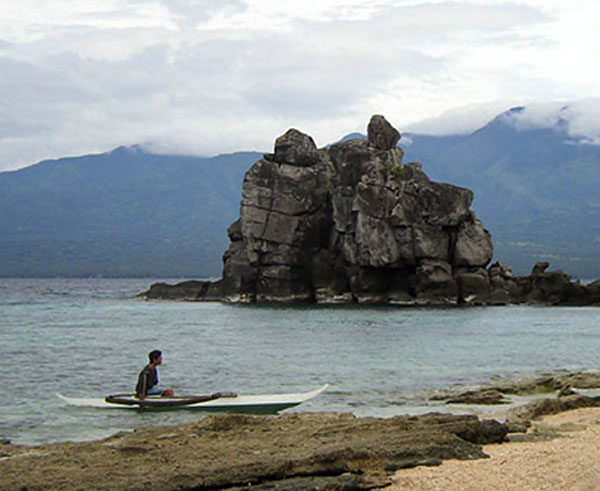
Apo Island coral-reef fishermen use canoes for their work.
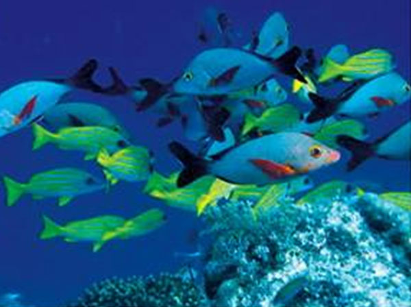
Fish on Apo Island's coral reef.
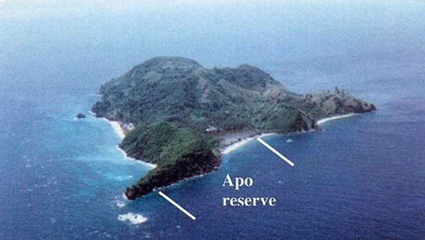
Location of the marine sanctuary at Apo Island.
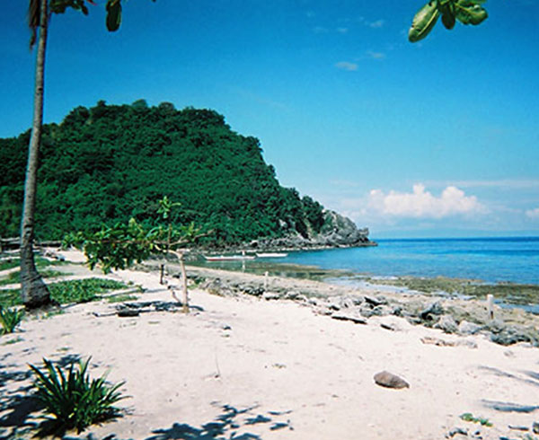
Apo Island's marine sanctuary seen from the beach.
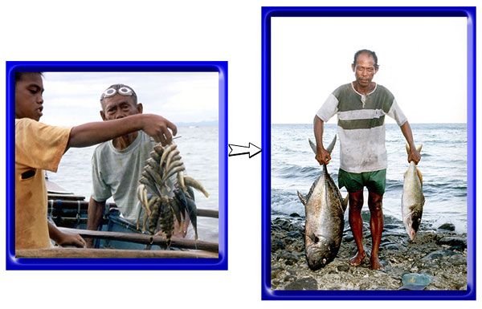
Reef fish before establishing the sanctuary and 10 years afterwards.
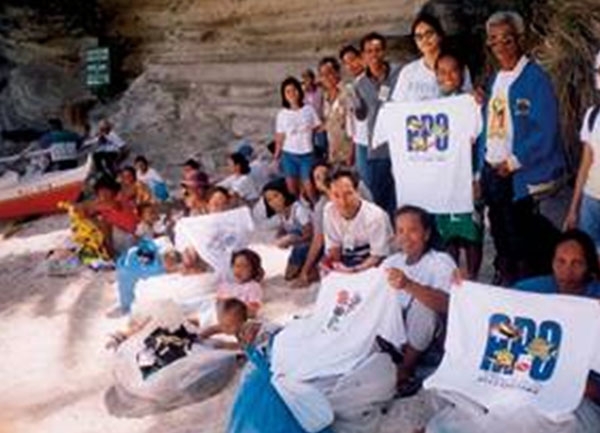
With tourism, some Apo Islanders developed small business such as selling souvenir T-shirts.
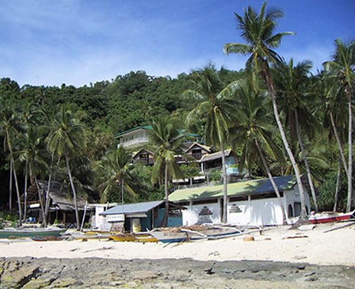
Apo Island's tourist strip: a small hotel (on the side of the hill), dive shop (dark building on the left), and church (white building on the right).
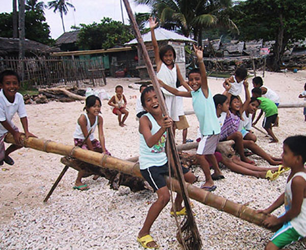
Apo's children "tipping" to a sustainable future. Apo Island has become a place for children to thrive.
4. Ingredients for Success in EcoTipping Point Case Studies (Short Handout)
Shared community awareness and commitment.
Strong democratic institutions and genuine community participation are prominent in EcoTipping Point stories. The community moves forward with its own decisions, manpower, and financial resources, so everyone feels a sense of ownership for community action.
Outside stimulation and facilitation.
Outsiders can be a source of fresh ideas and encouragement. A success story typically begins when people or information from outside a community stimulate a shared awareness about a problem and introduce game-changing ideas for dealing with it.
Enduring commitment of local leadership.
Trusted and persistent leaders inspire the deep-rooted and continuing community commitment and participation necessary to reverse the vicious cycles driving decline.
Co-adaptation between social system and ecosystem.
Social system and ecosystem fit together, functioning as a sustainable whole. When one gains, so does the other.
"Letting nature do the work."
EcoTipping Points create the conditions for an ecosystem to restore itself by drawing on nature's healing powers.
Rapid results.
Quick "payback" and something that can stand as a symbol of success help communities stay committed to change.
Key Symbol.
Something that serves as inspiration or stands for success in a way that helps communities stay committed to change.
Overcoming social obstacles.
Overcoming social, political, and economic obstacles that could block positive change.
Social and ecological diversity.
Greater diversity of people, ideas, experiences, and environmental technologies provide more choices and opportunities, and therefore better chances that some of the choices will be good.
Social and ecological memory.
Learning from the past adds to diversity and often points to choices that were once sustainable. Ecosystems contain "memory" of nature's design for sustainability.
Building resilience.
"Locking in" sustainability by creating the ability to adapt and deal with new (and often unexpected) conditions that threaten sustainability.
Vocabulary
- Stimulation: To excite activity or growth.
- Social System: Everything about a human society, including its organization, knowledge, technology, language, culture, and values.
- Ecosystem: All the living things (plants, animals, microorganisms) and their environment at a particular place.
- Restoration: A return of something to its original, unharmed condition.
- Facilitation: Helping to make something easier or happen successfully.
- Institution: An established pattern of behavior or relationships in a particular society.
- Co-adaptation: Two or more things adjusting to each other and fitting together so they function well.
- Obstacles: The people, things, or events that can block our way.
- Diversity: Variety (many things different from each other).
- Resilience: The ability to return to an original form after severe stress or disturbance.
5. Ingredients for Success in EcoTipping Point Case Studies (Extended Handout)
What does it take to turn around the vicious cycles driving environmental decline? Basically, it takes appropriate environmental technology combined with the social organization to put it effectively into use. More specifically, EcoTipping Point case studies have consistently shown that the following ingredients are keys to success.
Shared community awareness and commitment.
Strong democratic institutions and genuine community participation are prominent in EcoTipping Point stories. These stories do not typically feature top-down regulation or elaborate development plans with unrealistic goals. Of particular importance is a shared understanding of the problem and what to do about it: Shared recognition of why the problem has occurred, shared vision and knowledge of what can be done to set a turnabout in motion, and shared ownership of the community action that follows. The community devises an effective procedure for making this shared understanding a reality. It draws upon its collective experience and moves forward with its own decisions, manpower, and financial resources.
Outside stimulation and facilitation.
We seldom see EcoTipping points "bubble up from within." Outsiders can be a source of fresh ideas and encouragement. While action at the local level is essential, a success story typically begins when people or information from outside a community stimulate a shared awareness about a problem and introduce game-changing ideas for dealing with it. EcoTipping Point success stories will become more common only with explicit programs to provide this kind of stimulation to local communities.
Enduring commitment of local leadership.
Persistence is a key to success. A turnabout from decline to restoration seldom comes easily. It requires community commitment to apply an EcoTipping Points lever with sufficient force to reverse the vicious cycles driving decline. Trusted and persistent leaders inspire the deep-rooted and continuing community commitment and participation necessary for success.
Co-adaption between social system and ecosystem.
Social system and ecosystem fit together, functioning as a sustainable whole. As an EcoTipping Point story unfolds, perceptions, values, knowledge, technology, social organization, and social institutions all evolve in a way that enhances the sustainability of valuable social and ecological resources. Social and environmental gains go hand in hand. "Social commons for environmental commons" are developed, including clear ownership and boundaries, agreement about rules, and enforcement of rules.
"Letting nature do the work."
Micro-managing the world’s environmental problems is far beyond human capacity. EcoTipping Points give nature the opportunity to marshal its self-organizing powers to set restoration in motion.
Rapid results.
Quick "payback" helps to mobilize community commitment. Once positive results begin cascading through the social system and ecosystem, normal social, economic, and political processes took it from there.
A powerful symbol.
It is common for a prominent feature of the local landscape – or some other key aspect of an EcoTipping Point story – to represent the entire process in a way that consolidates community commitment and mobilizes community action to carry it forward.
Overcoming social obstacles.
The larger socio-economic system can present numerous obstacles to success on a local scale. For example:
- It imposes competing demands for people’s attention, energy, and time. People are so "busy," they don’t have time to contribute to the "social commons."
- People who feel threatened by innovation or other change take measures to suppress or nullify the change.
- Outsiders try to take over valuable resources after the resources are restored.
- Dysfunctional dependence on some part of the status quo prevents people from making changes necessary to break away from decline.
Social and ecological diversity.
Greater diversity provides more choices and opportunities – and better prospects that some of the choices will be good. For example, an ecosystem’s species diversity enhances its capacity for self-restoration. Diversity of perceptions, values, knowledge, technology, social organization, and social institutions provide opportunities for better choices.
Social and ecological memory.
Social institutions, knowledge and technology from the past have "stood the test of time" and may have something to offer for the present. Nature’s "memory" exists in the resilience of living organisms and their intricate relationships in the ecosystem, which have emerged from the time-testing process of biological evolution.
Building resilience.
“Resilience" is the ability to continue functioning in the same general way despite occasional and sometimes severe external disturbance. EcoTipping Points are most effective when they not only not only set in motion a course of sustainability, but also enhance the resilience to withstand threats to sustainability. As EcoTipping Point stories play themselves out, new virtuous cycles emerge to reinforce and consolidate the gains. A community’s adaptive capacity – its openness to change based on shared community awareness, prudent experimentation, learning from successes and mistakes, and replicating success – is central to resilience.
Vocabulary
- Stimulation: To excite activity or growth.
- Social System: Everything about a human society, including its organization, knowledge, technology, language, culture, and values.
- Ecosystem: All the living things (plants, animals, microorganisms) and their environment at a particular place.
- Restoration: A return of something to its original, unharmed condition.
- Facilitation: Helping to make something easier or happen successfully.
- Institution: An established pattern of behavior or relationships in a particular society.
- Co-adaptation: Two or more things adjusting to each other and fitting together so they function well.
- Obstacles: The people, things, or events that can block our way.
- Diversity: Variety (many things different from each other).
- Resilience: The ability to return to an original form after severe stress or disturbance.
6. Ingredients for Success: Apo Island (Student Worksheet)
Instructions: This worksheet will help you to identify the Ingredients for Success in a real situation. First review the Vocabulary needed for this success story. Second, read the success story, underlining the new vocabulary as you go. Finally, write on your worksheet a bullet-point list of elements in the story that are examples of each ingredient for success. For instance, if someone from another city introduced a new idea or helped get a project going, you could put a phrase or sentence about that under ‘outside stimulation and facilitation.’ Be as SPECIFIC as possible. You should have at least one example for each ingredient, though for some you may have many!
Vocabulary
- Fishery: Area where fish are caught.
- Expanding markets: when there are more people wanting to buy something for sale.
- Coral Habitat: The reefs of coral that fish use as their homes.
- Overfishing: When fishermen catch too much for the fish to keep up their population.
- Ban: To make certain behavior against the rules, usually by law or regulations.
- Marine Sanctuary: An area where people are not allowed to disturb the marine life.
- Interdependent Relationship: When two or more things rely upon one another for particular benefits.
- Persistent: When something or someone continues even if it is difficult.
- Non Governmental Organization (NGO): A nonprofit organization that addresses human concerns not covered adequately by government. NGOs are an important part of “civil society.”
Student Responses
- Shared community awareness and commitment
- Outside stimulation and facilitation
- Enduring commitment of local leadership
- Co-adaption between social system and ecosystem
- “Letting nature do the work”
- Rapid results
- A powerful symbol
- Overcoming social obstacles
- Social and ecological diversity
- Social and ecological memory
- Building resilience
7. Ingredients for Success: Apo Island Marine Sanctuary, Philippines (Teacher Key)
Shared community awareness and commitment.
Strong democratic institutions and genuine community participation are prominent in EcoTipping Point stories. Of particular importance is a shared understanding of the problem and what to do about it, and shared ownership of the action that follows. Communities move forward with their own decisions, manpower, and financial resources. At Apo Island, creation of the sanctuary, and subsequent community management of Apo Island's fishing grounds, came out of community discussion. The local barangay government took the lead, and Apo Island was able to draw upon its traditional procedure for community decision making by assembling representatives of all Island families at the primary school playground (along with an ample supply of roast pork and other amenities) to discuss the issue at hand until reaching agreement, even if it took days of intensive discussion to do so.
Outside stimulation and facilitation.
Outsiders can be a source of fresh ideas. While action at the local level is essential, a success story typically begins when people or information from outside a community stimulate a shared awareness about a problem and introduce game-changing ideas for dealing with it. The marine sanctuary was created after three years of dialogue between Apo Islanders and Silliman University staff – a dialogue that helped the fishermen and their families to take stock of what was happening to the fishery and what might be done about it. Marine biologist Angel Alcala took some of the fishermen to a small no-fishing reserve at another island, where they could see the dramatic impact of fish protection on fish stocks. Later, NGO assistance was critical for securing the Island's local (barangay) government legal authority to exercise control over the Island's fishery. Years later, another NGO helped the Islanders to set up a community family planning program.
Enduring commitment of local leadership.
Trusted and persistent leaders inspire the deep-rooted and continuing community commitment and participation necessary for success. From the very beginning, a dynasty of barangay leaders was highly committed to the marine sanctuary. Their commitment was entwined with entrepreneurial involvement in the Island's tourist development and with their stewardship of educational initiatives for the entire community, made possible by tourist revenues. Although not all Islanders were convinced at the beginning that the sanctuary was a good idea, those who were committed persisted until the benefits became obvious to everyone, and long-term community commitment and action followed.
Co-adaption between social system and ecosystem.
Social system and ecosystem fit together, functioning as a sustainable whole. When Apo Islanders established their marine sanctuary, they set in motion a "social commons" to fit their "environmental commons" – their coral reef ecosystem and fishery. The social commons began with community management of the sanctuary and evolved to managing the fishing grounds around the Island. Social cooperation was facilitated by the network of trust and obligation in Apo's tight-knit community, where everyone is related by blood or marriage to almost everybody else. The cooperation worked because they drew on community wisdom to devise effective rules for protecting their fishery, and the rules were practical to enforce (see "Overcoming social obstacles" below). The marine ecosystem responded by repairing itself and better meeting community needs. Once the EcoTipping Point – the marine sanctuary and the social organization to implement it – set positive change in motion, normal social, economic, governmental, and ecological processes took it from there.
"Letting nature do the work".
EcoTipping Points give nature the opportunity to marshal its self-organizing powers to set restoration in motion. As soon as fish were protected in Apo's marine sanctuary, their high reproductive capacity enabled them to quickly repopulate the sanctuary. When destructive fishing was no longer allowed around the Island's fishing grounds, nature set in motion a complex restoration process for the entire coral ecosystem – something that human micro-management of the ecosystem could never achieve.
Rapid results.
Quick "payback" helps to mobilize community commitment. Three years after establishing the sanctuary, the increase in fish stocks was so dramatic that it inspired Apo Islanders to embark on managing their fishing grounds outside the sanctuary. Full recovery of fish catches outside the sanctuary took longer, but there were visible improvements from the beginning. The spectacular recovery of the Island's coral-reef ecosystem attracted tourism, reinforcing the commitment of Islanders to a healthy marine ecosystem. A substantial portion of the income from tourism went back to the community in the form of infrastructure (e.g., water supply, electrification, renovation of the Island's primary school) and community development projects (e.g., a local bakery, micro-financing, and marketing cooperatives), further reinforcing commitment.
A powerful symbol.
It is common for prominent features of EcoTipping Point stories to serve as inspirations for success, representing the restoration process in a way that consolidates community commitment and mobilizes community action. The marine sanctuary is a sacred site for Apo Island inhabitants. It is the centerpiece of a shared story of pride and achievement. They say that the sanctuary saved the island's marine ecosystem, the fishery, and their way of life. It is unthinkable to violate the sanctuary or what it represents.
Overcoming social obstacles.
The larger socio-economic system can present numerous obstacles to success on a local scale. For example, people may have so many demands on their time, it is difficult to find the time for community enterprises. The Island community devised ways to manage its marine ecosystem without making excessive demands on people's time. The sanctuary's no-fishing rule was easily enforced by a single person watching from the beach, a task rotated among Island families. Similarly, fishermen at work on the Island's fishing grounds could easily see if other fishermen didn't belong there or were using illegal fishing methods. Another common obstacle is government authority that stands in the way of a local community doing what is necessary. This is an issue of local autonomy. Apo Island's local government encountered this issue when it decided to exclude other fishermen from the Island's fishing grounds (with no precedent in Philippine law or tradition) and enforce a ban on destructive fishing methods (when the enforcement of existing fisheries laws was the domain of higher levels of government). Fortunately, the Islanders were able to negotiate approval from higher levels of government to embark on these innovations. Finally, the establishment of a national network of marine sanctuaries, called the National Integrated Protected Area System (NIPAS), which was inspired by Apo Island's success, posed a serious challenge to local autonomy. Before, management decisions for their fishery resided solely with Apo Islanders themselves, but now the NIPAS management board has final authority. One practical consequence has been that tourist fees, which went directly to the Island's local government before, now go to the national organization and return to the local government after considerable delay and reduction of the funds. The Islanders are still in the process of dealing with these challenges of national integration.
Social and ecological diversity.
Diversity provides more choices, and therefore more opportunities for good choices. Ecologically, the species richness (i.e., diversity) of Apo Island's marine ecosystem has enhanced its capacity for self-restoration. Socially, the Islanders created their sanctuary, and undertook the many innovations that followed, only after expanding (i.e., diversifying) their social horizons beyond the village to include dialogue with scientists from Silliman University. This helped to diversify their awareness of choices for action. Then, the rich diversity of the Island's coral reef enhanced its attractiveness for tourism, and tourism provided a more diversified base for the Island's economy. Before, the main sources of income were fishing, part-time farming, mat-weaving, and boat service for people and supplies to and from the island. Tourism brought other sources of income, such as working at the Island's two small hotels, providing services to the hotels (e.g., catering), selling T-shirts and sarongs to tourists, "home-stay" accommodation to backpackers, and expanding boat services to and from the island. Education has allowed some of the younger generation to pursue professional careers outside the Island, diversifying income sources even further and providing additional income for the local economy.
Social and ecological memory.
Learning from the past adds to the diversity of choices, including choices that proved sustainable by withstanding the "test of time." Social memory had a key role after Apo Islanders banned destructive fishing. The fishermen returned to traditional fishing practices such as hook-and-line, fish traps, and large-mesh gillnets, which they knew to be functional and more sustainable than destructive fishing practices. The ecological memory of the coral ecosystem was found in nature's design for sustainability through the intricate co-adaptations among the ecosystem's natural inhabitants, and this "memory" for sustainable design, built into the ecosystem, was the key to its recovery as a valuable resource for the Island. Social and ecological memory played a key role in deciding where to locate the sanctuary. The Islanders selected a highly degraded part of the Island's fishing grounds, which they considered to have the greatest potential for recovery, because they recalled it had the Island's richest coral ecosystem in the past. Finally, when the Islanders decided how many fish they should harvest as fish stocks recovered, they were able to fall back on their traditional value of "taking only what they need from the sea." With larger fish stocks, they could have increased their catch (and income) by continuing to fish "dawn to dusk" (as depleted fish stocks had forced them to do before). But instead, as fish stocks increased, they reduced the intensity of their fishing, keeping their total fish catch about the same as before – a wisely sustainable strategy. While devoting some of their "newfound" time to diversifying economic activities, the fishermen devoted much of it to family and community, which traditional values told them are most important for quality of life.
Building resilience.
"Resilience" is the ability to continue functioning in the face of sometimes severe external disturbances. The key is adaptability. Apo Islanders showed their adaptive capacity when tourism became so heavy that diving and snorkeling were damaging the coral and interfering with their fishing. Their experience managing their fishery gave them the insights and confidence necessary to impose restrictions on snorkeling and diving, even if it conflicted with short-term income from tourism. In the long term, spinoffs from the sanctuary, such as tourist income, local women's associations, general strengthening of community solidarity, quality education, and professional careers for some family members on the adjacent mainland have reinforced the ability of the island community to sustain its success in the face of unknown future challenges.
8. Feedback Diagrams: Apo Island (Student Worksheet)
Diagram for students to fill in
Instructions: Fill in the blanks in the boxes, writing “more” to indicate an increase during the story’s period of decline, or “less” to indicate a decrease during that period. Draw arrows between boxes to show which factors were affecting other factors strongly enough to cause their increase or decrease. There should be at least one arrow pointing away from each box and at least one arrow pointing into each box. Finally, trace circular patterns of the arrows that represent “vicious cycles” that were set in motion by the negative tipping point and driving decline.
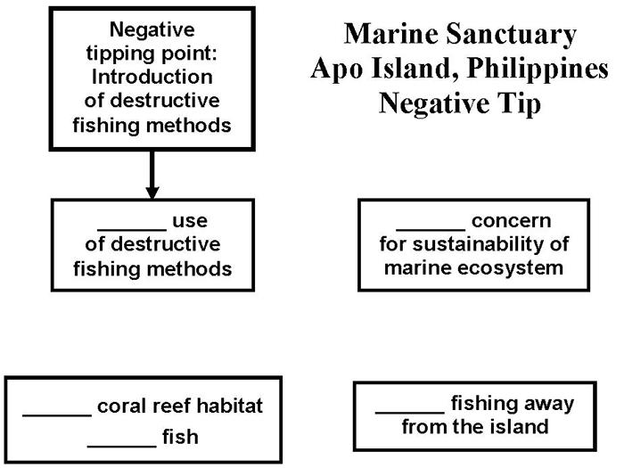
Diagram for students to fill in
Instructions: Fill in the blanks in the boxes, writing “more” to indicate an increase during the story’s period of restoration, or “less” to indicate a decrease during that period. Draw arrows between boxes to show which factors were affecting other factors strongly enough to cause their increase or decrease. There should be at least one arrow pointing away from each box and at least one arrow pointing into each box. Finally, trace circular patterns of the arrows that represent “virtuous cycles” that were set in motion by the positive tipping point and helped to drive restoration.
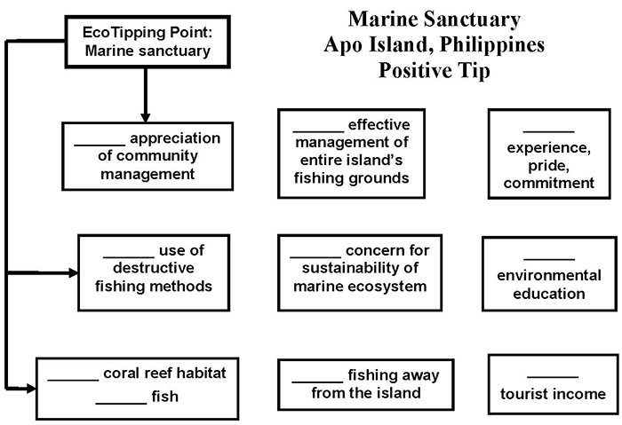
9. Apo Island Feedback Diagrams (Teacher Key)
The negative tipping point occurred throughout the Philippines with the introduction of destructive fishing methods such as dynamite, cyanide, and small-mesh fishing nets after World War II. Two interlocking and mutually reinforcing vicious cycles were set in motion:
- The use of destructive fishing methods reduced fish stocks directly through overfishing. Destructive fishing reduced the stocks indirectly by damaging their coral habitat. With declining fish stocks, the fishermen were more and more compelled to use destructive fishing methods to catch enough fish, further degrading habitat and reducing fish stocks.
- As home fishing grounds deteriorated, fishermen traveled further and further to find less damaged sites where they could catch some fish. They used destructive fishing without restraint because places far from home were of no particular significance for future fishing. Sustainability of the island’s fishing grounds also became less important as fishing shifted away from the island.
The downward spiral of destructive fishing, habitat degradation, diminishing fish stocks, and fishing further from home continued until many places were virtually worthless for fishing.
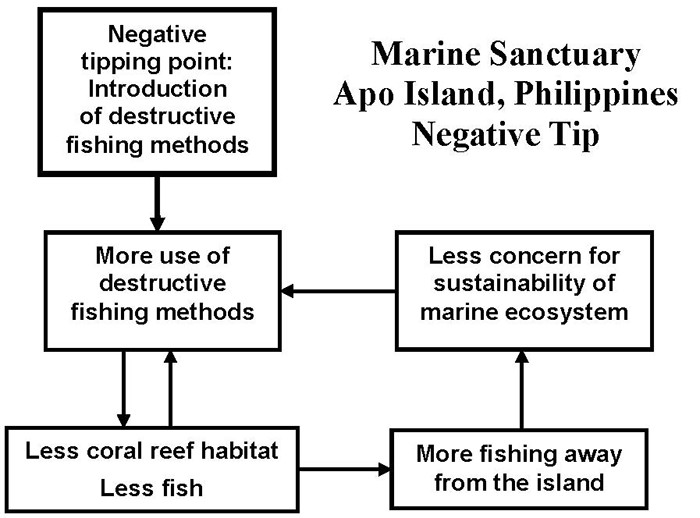
The positive tipping point for Apo Island was creation of a marine sanctuary, setting in motion a cascade of changes that reversed the vicious cycles in the negative tip. In the diagram below the vicious cycles transformed to virtuous cycles are shown in black. Additional virtuous cycles that arose in association with the marine sanctuary are shown in blue and red.
- The sanctuary served as a nursery, contributing directly to the recovery of fish stocks in the island’s fishing grounds.
- Success with the sanctuary stimulated the fishermen to set up sustainable management for the fishing grounds. A virtuous cycle of increasing fish stocks, accompanied by growing management experience, pride, and commitment to the sanctuary, was set in motion.
- As fishing improved around the island, fishermen were no longer compelled to travel far away for their work. Fishing right at home, where they had to live with the consequences of their fishing practices, reinforced their motivation for sustainable fishing.
- “Lock in” to sustainability came with the formation of additional virtuous cycles:
- The increase in fish populations and the health of the reef ecosystem around the island led to tourism. Earnings from tourism provided a strong impetus to keep the marine ecosystem healthy. Although coral reef tourism is frequently not sustainable because tourists damage the coral, the experience of Apo Island’s inhabitants with managing their marine sanctuary and fishing grounds gave them the ability to manage tourism so it didn’t damage the coral.
- Positive results from the marine sanctuary stimulated the island community to develop a strong marine ecology program in their elementary school, so the new generation values the island’s marine ecosystem and knows how to keep it healthy.
- Income from tourism gave islanders the ability to send their children to high school and university on the mainland. A few have gone on to study marine science in graduate school. The high educational level of the island’s new generation will give it the ability to deal with unexpected future threats to their fishery and marine ecosystem.
- Enhanced ecological awareness has led to a family planning program aimed at preventing an increase in population that would overburden the island’s fishery in the future.
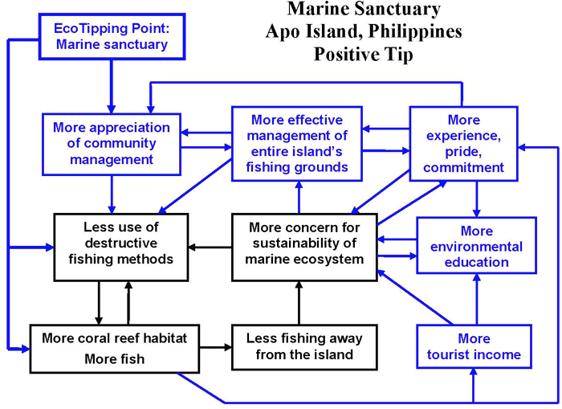
Black: Vicious cycles reversed by the EcoTipping Point, transforming those vicious cycles into virtuous cycles.
Blue: Additional benefits created by the EcoTipping Point, forming new virtuous cycles that helped to lock in the gains.
10. Ingredients for Success Powerpoint Preview
Use Previous, Next, or the slide menu to view the presentation.
11. "Student Centered How Success Works" PowerPoint Preview
This PowerPoint file contains photos for this case. Teachers can use it for PowerPoint presentations, and students can use it to create their own presentations as described in Step #10 of “Suggested Procedure” at the top of this page.
Use Previous, Next, or the slide menu to view the presentation.
12. Video:
Apo Island: Saving a Coral Reef and its Fishery
- Producer: Damon Wolf
- Download: video-etp-apo.mp4
- Watch this video on YouTube
- A marine sanctuary at Apo Island in the Philippines set in motion community fisheries management that reversed a vicious cycle of destructive fishing and depletion of fish stocks, restoring the island’s coral reef ecosystem and rescuing a fishing village’s livelihood and wellbeing. Apo Island’s success has inspired 700 other fishing villages to establish marine sanctuaries.
- Download video script (PDF)